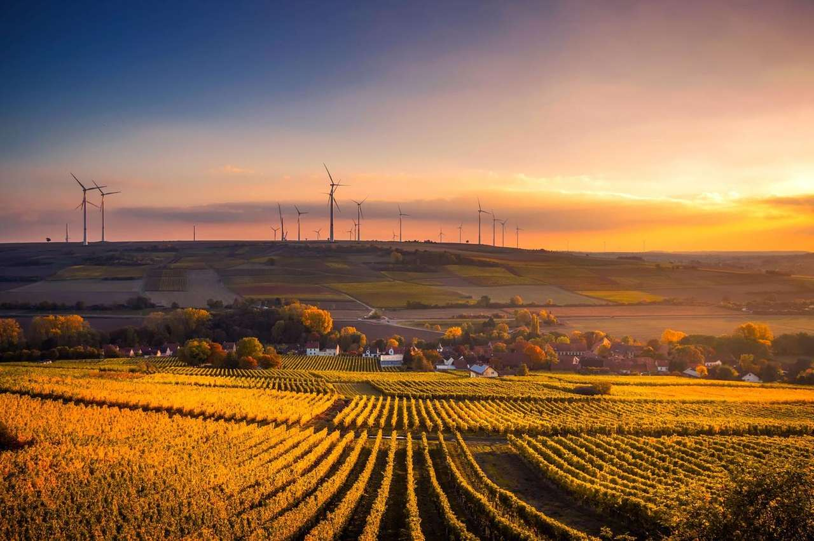
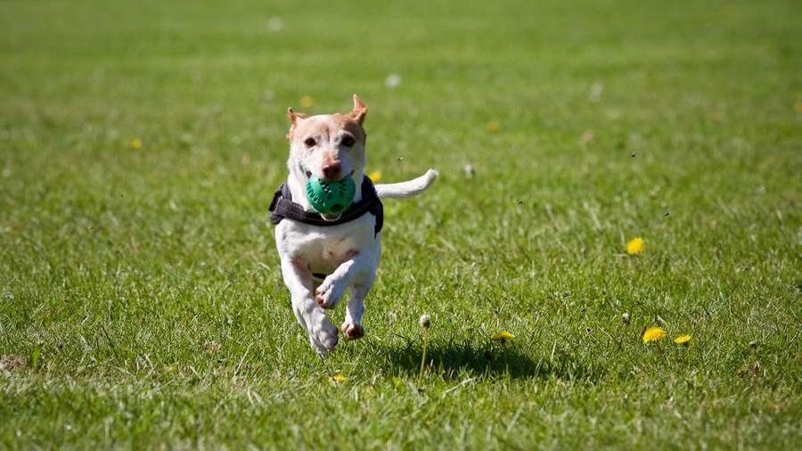
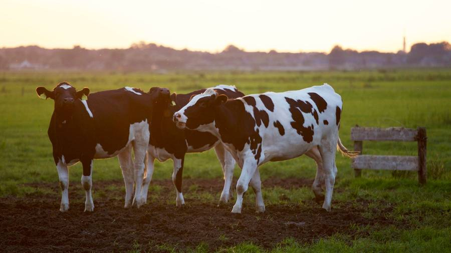
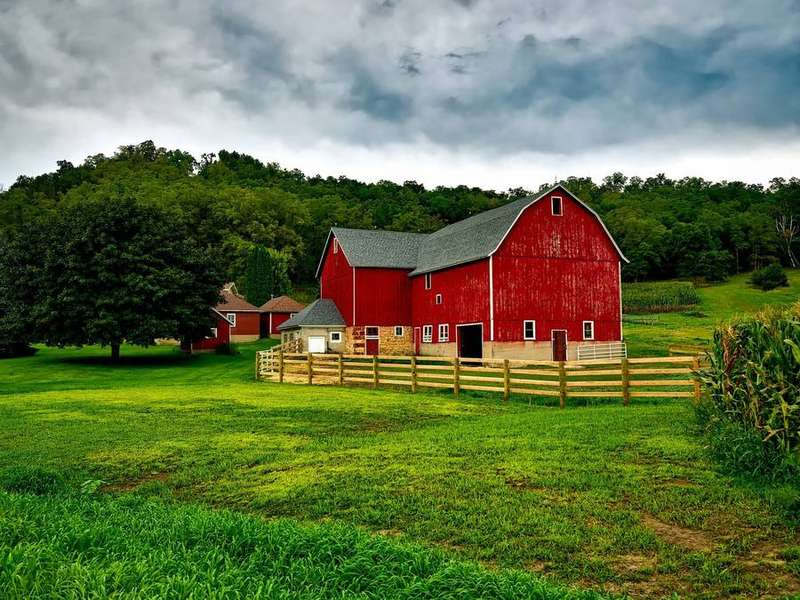
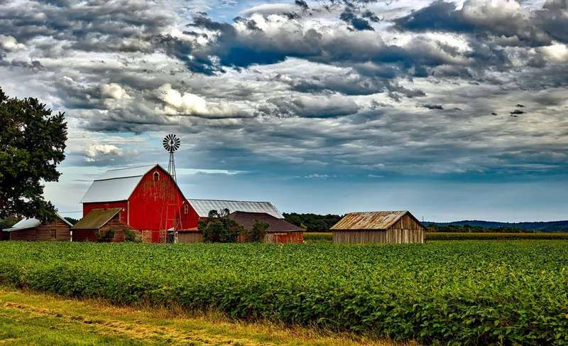

Nutrição de bovinos de corte
Boi que come certo ganha arroba na seca.
Suplemento para cria, recria e terminação na região de Dourados. A conta do cocho sai em sacos, não em promessa de milagre.

Seca não é desculpa
É época de proteína no cocho.
“Na seca passada o lote não andou para trás. O proteinado entrou antes do pasto acabar.”
“Eles falaram em saco por mês, não em porcentagem que eu esqueço.”
“O confinamento fechou o trato com o núcleo da casa. Arroba saiu no prazo.”
“Visita no pasto, não só nota. Olharam o cocho vazio antes de indicar produto.”
Monte o cocho
Quantos sacos o lote pede?
Consumo de referência da casa, em quilo por cabeça. Não substitui a visita do técnico nem a leitura do pasto.
Linha do cocho

Mineral Águas
Baixo consumo nas águas. Saco de 30 kg.
Mineral para pasto bom, quando o boi come pouco e falta o que o capim não entrega.
- Época
- Águas
- Consumo
- Cerca de 70 a 90 g por cabeça ao dia no adulto
- Saco
- 30 kg
- Cocho
- Coberto, com espaço para o lote inteiro chegar junto
Seca 40
Proteinado de seca para cria e recria. Saco de 30 kg.
Proteína para o pasto seco segurar o peso. O nome 40 é da casa, não de um selo oficial.
- Época
- Seca
- Para
- Vaca de cria e garrote
- Saco
- 30 kg
- Meta
- Manter escore, não fazer milagre de engorda

Creep do Bezerro
Creep feeding. Saco de 30 kg.
Para o bezerro ao pé, com cocho que a vaca não entra. Ajuda o desmame sem secar a mãe.
- Categoria
- Bezerro de cria
- Cocho
- Exclusivo, com altura de bezerro
- Saco
- 30 kg
- Água
- Sem água boa, o creep não compensa

Sal Energético
Transição de águas para seca. Saco de 30 kg.
Entra quando o capim ainda está de pé, mas o ganho já caiu. Ponte antes do proteinado cheio.
- Quando
- Saída das águas
- Para
- Recria e terminação a pasto
- Saco
- 30 kg
- Troca
- Não misture sobra com o proteinado no mesmo cocho sujo
Núcleo Terminação
Núcleo para trato de confinamento. Saco de 30 kg.
Entra na batida com milho e volumoso da fazenda. A formulação fecha com o técnico, não com o saco sozinho.
- Sistema
- Confinamento
- Saco
- 30 kg de núcleo
- Leitura
- Cocho lido de manhã, trato ajustado no mesmo dia
- Meta
- Arroba no prazo combinado

Ração de Adaptação
Primeiros 14 dias de trato. Saco de 30 kg.
Para o rúmen acostumar antes do trato cheio. Pular a adaptação é o jeito mais caro de perder boi.
- Duração
- Cerca de 14 dias
- Para
- Entrada de confinamento
- Saco
- 30 kg
- Cuidado
- Água e fibra no cocho, sem pressa de concentrado
Nada nesta combinação.
Visita no pasto
O técnico olha cocho, água e escore antes de indicar saco. Foto de WhatsApp ajuda, não substitui.
Entrega antes da seca apertar
Quem programa em março não disputa caminhão em julho, quando todo mundo lembra do proteinado.
Conta em saco
Cabeça, época e categoria viram quilo por dia e saco no mês. O capataz entende a ordem.
A casa
Nasceu do cocho da família, não de um catálogo de fora.
A Cocho Cheio começou em 2014 na fazenda dos Alencar, em Dourados, quando a seca levou o ganho de um lote inteiro. O que sobrou da lição virou fábrica pequena e visita técnica. Hoje o saco sai para Itaporã, Maracaju, Rio Brilhante e a volta de Dourados.
Elisa Alencar
Sócia. Ainda anda no pasto com o caderno de escore.
Beto Vargas
Zootecnista. Fecha trato de confinamento e proteinado.
Cida Moraes
Entrega. Sabe qual estrada o caminhão não enfrenta na chuva.
Quem fornece a volta
- Salina do Pantanal
- Milho da Serra
- Saco Papel MS
- Frete do Cocho
- Análise de Pasto
- Água na Aguada
Pergunta de quem tem boi
É referência. Pasto, água e escore mudam o consumo. O técnico ajusta na visita. A conta serve para você não errar a ordem de grandeza.
O foco da casa é corte. Lote de leite pequeno a gente indica parceiro, sem fingir que o saco é o mesmo.
A rota semanal pede volume que encha o caminhão da região. Lote pequeno entra junto da vizinhança quando a data coincide.
Sim, na abertura do trato e na primeira semana. Depois o capataz segue a planilha e chama se o cocho amanhecer sobrando demais.
Dá, no pátio da casa, com hora marcada para o saco não tomar chuva no caminhão aberto.
Sua casa de nutrição com esse tom.
Demonstração fictícia. A prévia da sua empresa fala a língua do cocho, não a de um catálogo genérico.
Quero uma prévia do meu site